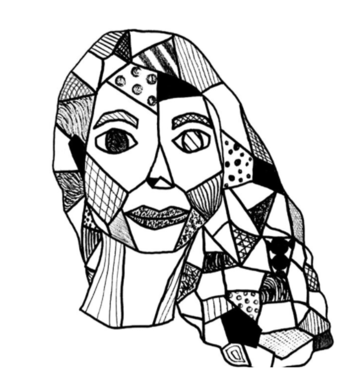
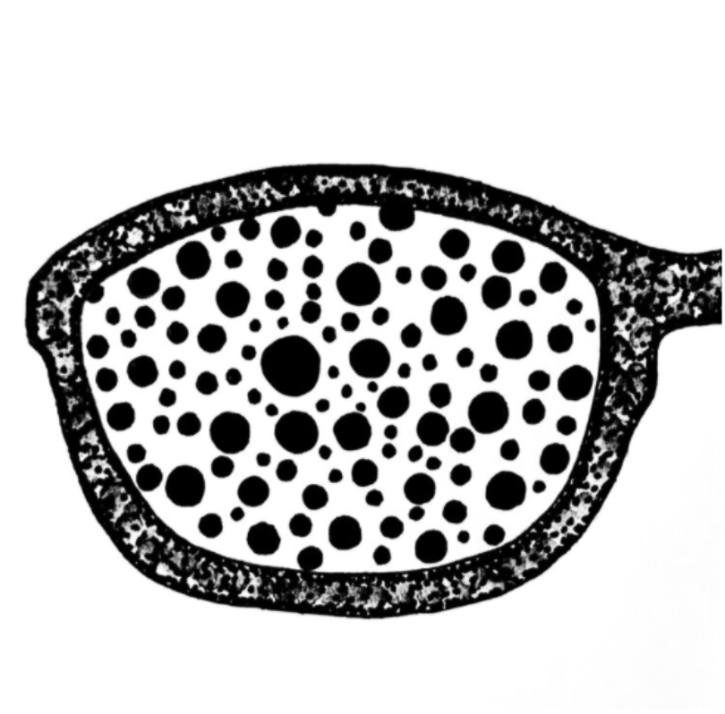
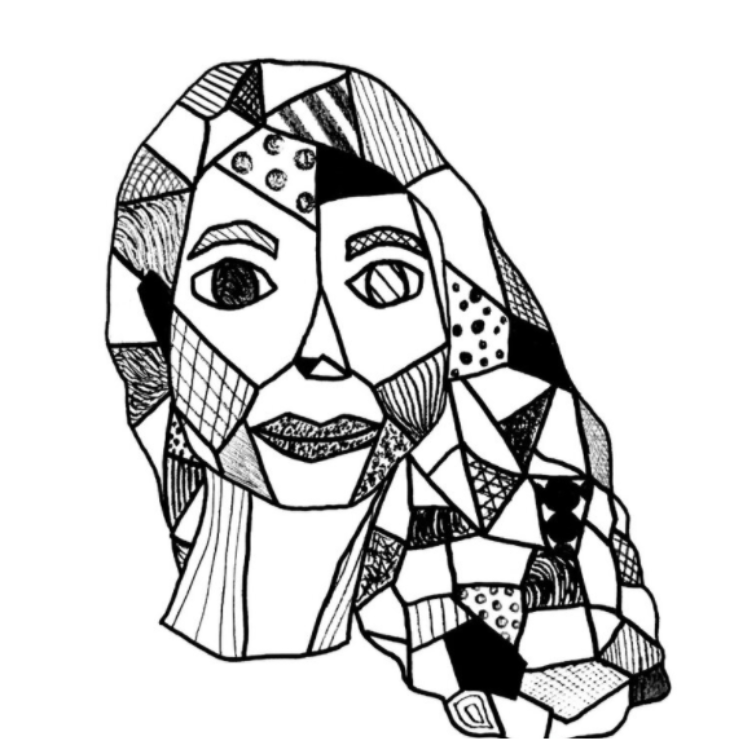
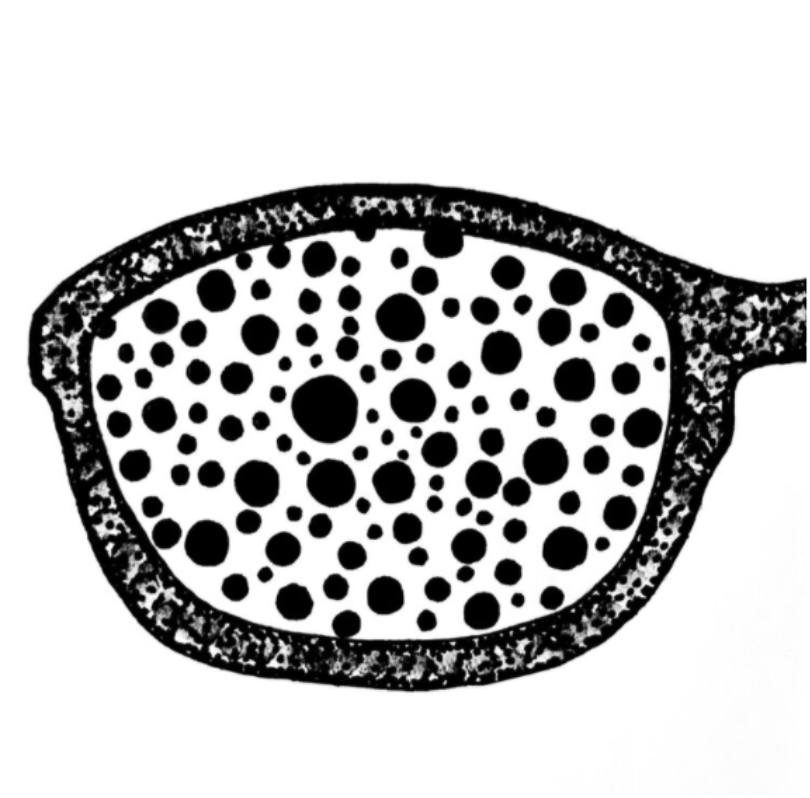

Here's some drawings I made using some Sharpies and my iPad. These were mostly for an art class that I took at the University of Michigan. Each piecehad a new focus every week, so some pieces have interesting topics, like the pineapple drawings. I used my iPad to draw some of it and sharpies to draw other pieces.
 





Each design either was drawn off the page or had a border to provide a certain effect. This class also helped me learn how to edit drawings with the Adobe Suite. I now know more graphic design concepts as a result of this class. I think this helps with Web Design.